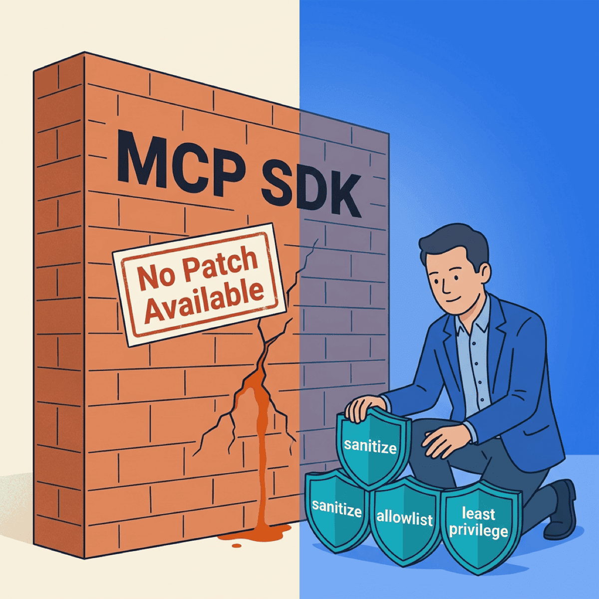

Anthropic Won’t Patch the MCP Vulnerability in 150 Million Downloads. Now What?

TL;DR
- A critical Remote Code Execution (RCE) flaw was disclosed in Anthropic’s official MCP SDKs across 150M+ cumulative downloads and up to 200,000 servers
- Anthropic was told in November 2025. They declined to patch it and called the behavior “expected”
- 10 derivative Common Vulnerabilities and Exposures (CVE) entries have already been issued in downstream projects like LiteLLM, LangFlow, Flowise, LangBot, and LettaAI
- The lesson for CTOs: vendor trust is not a security control. Audit your MCP deployments yourself this week
On April 15, security researchers at OX Security disclosed a critical RCE vulnerability in Anthropic’s official Model Context Protocol (MCP) SDK. It affects 150 million cumulative downloads and up to 200,000 servers. Anthropic was told in November. They declined to patch it and called the behavior “expected.”
Last week I wrote that 43% of MCP servers have command-injection flaws. This week, the protocol’s own SDK joined that 43% — and the vendor decided not to fix it.
If you installed an official Anthropic SDK in the last year, you already have this flaw. So do most of the popular agent frameworks built on top of it. And there is no upgrade path that closes the hole.
The disclosure in plain English
OX Security found a systemic RCE across Anthropic’s official MCP SDKs in Python, TypeScript, Java, and Rust. The root cause is how the SDKs handle tool inputs. They pass agent-derived strings into execution paths without sanitization — and trust the caller to handle it.
Ten downstream projects inherited the flaw. CVEs have been issued for LiteLLM, Flowise, Agent Zero, Upsonic, Windsurf, DocsGPT, GPT Researcher, LangFlow, LangBot, and LettaAI. Every one is rated critical. Every one can be fully compromised by an attacker who crafts the right tool-call input.
The research timeline matters. OX Security notified Anthropic in November 2025 and published on April 15, 2026 — roughly five months of responsible disclosure. The outcome was that Anthropic chose not to ship a protocol-level fix.
What makes the scope so large is that the flaw sits in a shared architectural decision. One design choice, made once at the protocol layer, propagated silently into every language SDK and every downstream framework. That is why a single vulnerability generated ten CVE IDs in derivative projects, and why the exposure numbers are measured in hundreds of thousands of instances rather than dozens.
Kevin Curran, an IEEE senior member and cybersecurity professor at Ulster University, put it bluntly. Every company and developer building on MCP needs to treat this as an immediate wake-up call.
“Expected behavior” — what Anthropic actually said
Anthropic’s response was that the behavior is expected and that input sanitization is the application developer’s responsibility, not the SDK’s. The Register reports that Anthropic’s only action was updating the security policy to recommend that “MCP adapters, specifically STDIO ones, should be used with caution.” OX researchers dismissed that as ineffective — it does not change the default behavior of the SDK.
This is a defensible position in the abstract. It mirrors the Amazon Web Services shared-responsibility model — the cloud provider secures the platform, and the customer secures what they put on it. That model has worked for two decades in cloud.
But shared responsibility only works under two conditions. The vendor has to document the boundary clearly. And the vendor has to ship safe defaults. Neither is present here.
There is no prominent warning in the SDK documentation that agent-derived strings should be treated as untrusted by default. There is no opt-in sanitization helper shipped in the library. A developer who reads the quickstart and copies the example code will produce a server with the exact vulnerability class disclosed by OX Security — without ever writing a line of unsafe code themselves.
Shared responsibility only works when the platform vendor documents the boundary clearly and ships safe defaults. Neither is present here.
— Clarke Bishop
CSO Online captured the framing most precisely. They called it RCE by design — not a bug, an architectural choice. The SDK behaves exactly as the vendor intended, and the vendor’s intent distributes the security burden onto every developer who installs it.
Vendor trust is not a security control
Most CVEs follow a script: disclosure, patch, upgrade, move on.
This one doesn’t. Anthropic’s refusal to patch means there is no upgrade path that closes the hole at the protocol level. The only remediation is a defensive pattern you apply yourself, in every tool you build or install.
That is a different class of problem. It requires ongoing discipline, not a one-time upgrade. It maps cleanly to MCP05 (Command Injection) and MCP04 (Supply Chain) — two categories in the OWASP MCP Top 10 that are hardest to close because they span your whole dependency graph.
Your MCP security program cannot assume the SDK will ever fix this. It has to assume this is permanent.
Extend cloud-era discipline to model vendors
Every CTO already applies this principle to AWS. To GitHub. To every SaaS vendor in your stack.
You don’t disable your own logging because CloudTrail exists. You don’t skip Identity and Access Management (IAM) reviews because your cloud provider is reputable. You don’t remove code review because GitHub is secure. You extend that discipline to model vendors the same way — especially when the model vendor is shipping infrastructure components into your production path.
Three things make this situation especially risky:
- The SDK looks like application code — developers apply library-level trust, not infrastructure-level review
- The flaw is invisible at code-review time — the unsafe behavior is in the SDK internals, not in your pull request
- Model vendors are new as infrastructure — the security maturity curve is still climbing, so treat it that way
The CTOs who get this right will treat AI model vendors the same way they treat cloud vendors. Defined shared-responsibility boundary. Their own controls on top. No exceptions because the vendor has a good brand.
Your 5-step MCP audit, starting today
The OWASP MCP Top 10 exists as a framework. Last week’s post introduced it. This week, use it. Here is a practical sequence that any engineering org can run in under a day.
1. Inventory every MCP server and SDK. List every MCP server you have deployed. List every MCP SDK in your package manifests. Include private and internal servers. This maps to OWASP MCP09 (Shadow MCP Servers) and is the step most orgs skip.
2. Classify every tool boundary. For each server, identify every tool function that takes agent-derived input and passes it to a subprocess, shell, Structured Query Language (SQL) query, or external API. These are your sanitization points. This is OWASP MCP05.
3. Apply input sanitization at every boundary. Do not rely on the SDK. Add explicit validation. Use allowlists wherever possible — if a tool accepts a filename, reject anything that isn’t a filename. If it accepts a command argument, match against a fixed set of allowed values.
After the five steps
Those five steps close the architectural exposure. What remains is ongoing discipline.
4. Scope tool permissions to least privilege. One tool, one narrow permission. No broad personal access tokens. No service accounts with * scopes. This is OWASP MCP02 (Privilege Escalation via Scope Creep) and MCP07 (Insufficient Authentication & Authorization).
5. Pin and verify your dependencies. Pin SDK versions. Verify packages against official sources. Watch the OX Security advisory for new CVEs in the downstream projects. This is OWASP MCP04.
This audit takes four to six hours for most mid-sized engineering orgs. It finds 80% of the risk. Do it this week, not next quarter. The window between a widely-announced vulnerability and active exploitation is now measured in days.
A few practical notes from running this process with clients.
The inventory step always turns up more MCP servers than leadership expected — usually because a developer stood one up for a prototype and never tore it down. The classification step is where most of the real work sits; plan on one engineer-hour per server.
The sanitization step tempts teams to cut corners. Resist it. Allowlists beat denylists every time — a denylist has to anticipate every attack pattern, but an allowlist only has to describe what’s legitimate.
You cannot patch “expected behavior.” You can only build discipline around it — and the orgs that build it first will pull ahead.
— Clarke Bishop
Model vendors are infrastructure vendors now
The mental model to carry forward is that the model vendor is an infrastructure vendor. Their Software Development Kits (SDKs) are infrastructure components. Their protocol choices affect your security posture directly.
Treat them that way. Same skepticism you apply to any cloud dependency. Same auditing. Same defense-in-depth.
The AI-native companies of 2027 and 2028 will look like the cloud-native companies of 2012-2015 did. The ones who got cloud security right early pulled ahead and stayed ahead. The same dynamic is starting now with MCP.
Now what?
A vendor telling you the vulnerability is “expected behavior” does not change the threat model. It clarifies whose job it is to handle it.
Run the audit. Pin your versions. Sanitize your inputs. Treat the MCP SDK like any other infrastructure component you didn’t write — and assume nothing about what the next SDK release will or won’t fix.
Running MCP in production without an audit? Let’s talk about how fractional CTO support can help your team close the gap this week, not next quarter.